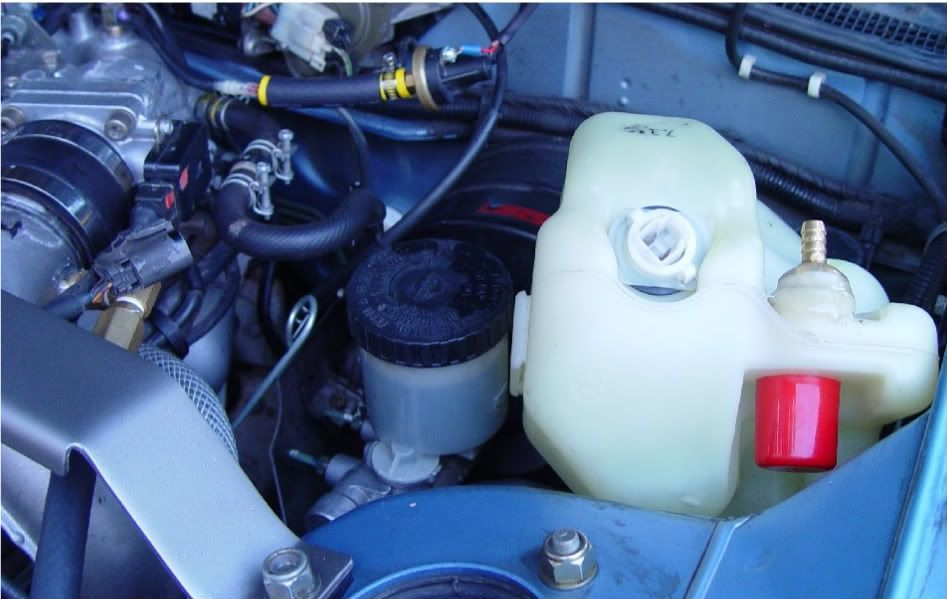
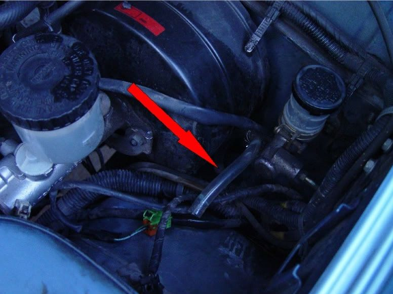
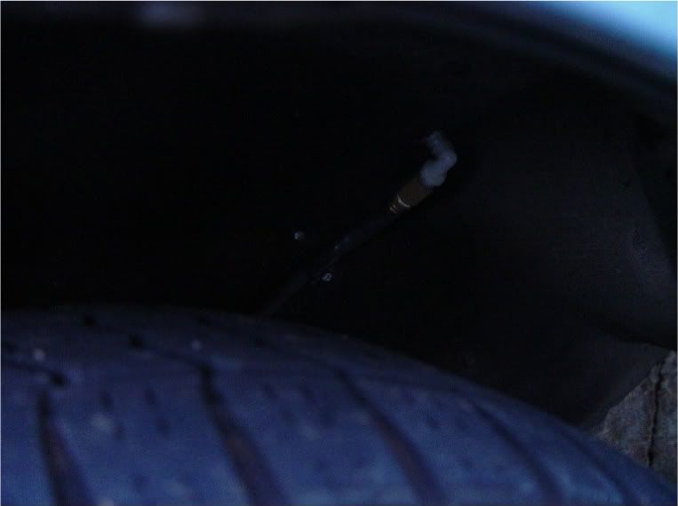
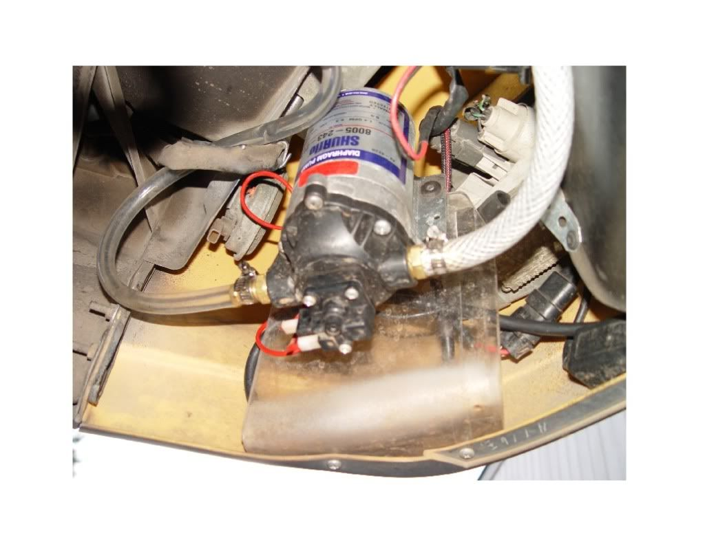
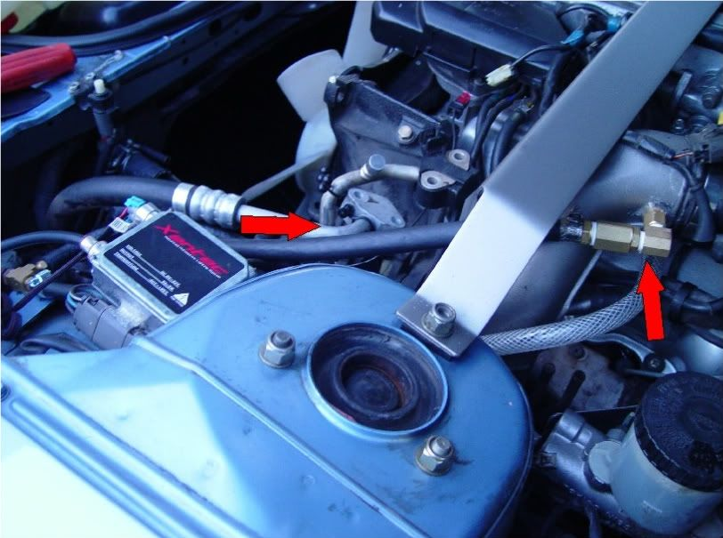
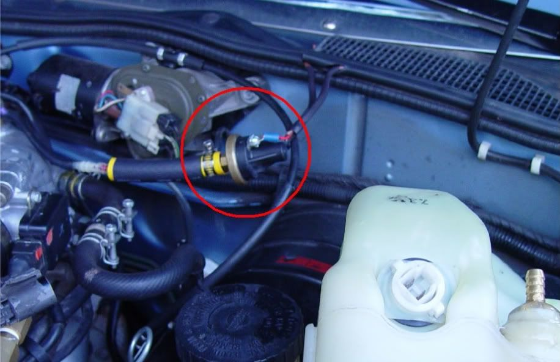
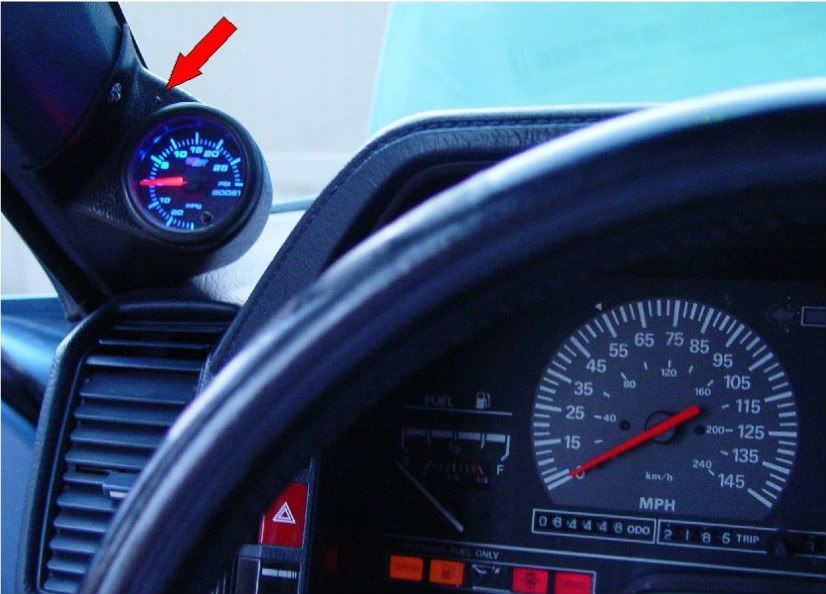
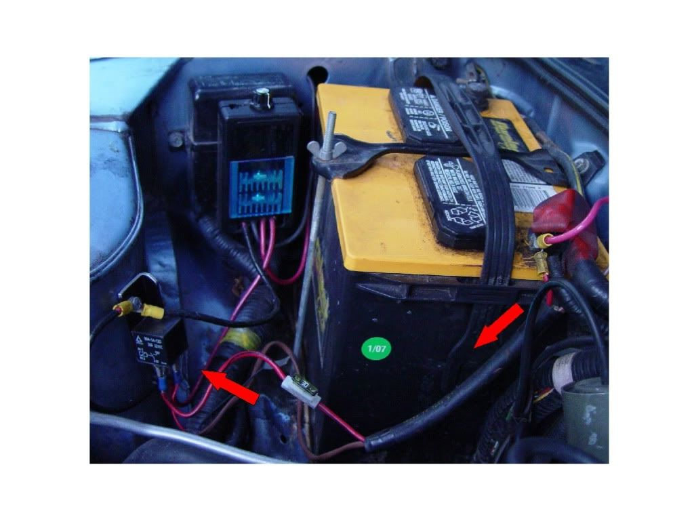
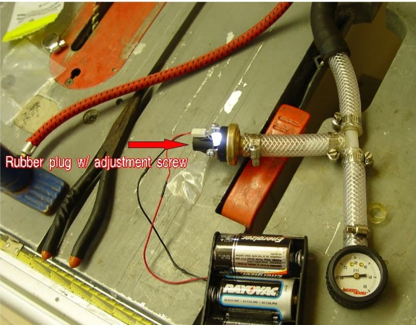
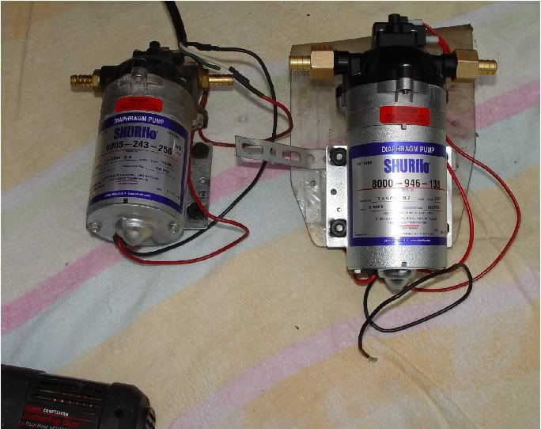

-
After finishing the NA2T conversion I decided to use a DIY water methanol set up over intercooling. I am running 12- 14 lbs. of boost with no intercooling and wonder why this is not being utilized by more people with turbocharged vehicles. I haven't noticed the slightest hint of detonation at any time since installation. I am running 93 octane, 100% gasoline without any ethanol. This set up cost me around $150- $165 total. I had built a DIY HHO generator and used it for about a year during the ridiculous gas prices, so some of the wiring happened to work out perfectly for the Water/ Methanol system. I use the term "methanol" generically- I actually use a 50/50 distilled water / denatured alcohol mix. The alcohol is available in 1 or 5 Gallon cans at paint stores.
Understand the basic purpose of doing this to your car. You are simply adding a system that reduces intake temperatures at a FIXED RATE.
The first step is to convert my windshield wiper tank (Never really used) to a new duty. The wiper pumps are removed and I used fittings to cap one side and plumb the other. After modifying the openings, I used hot glue liberally around the seams. This tank is made of HDPE and as such, I am unaware of anything that will actually stick to this stuff other than hot glue. CLEAN everything inside and out on the tank- DRY IT thoroughly and them use the hotmelt glue (Emphasis on HOT). In fact, heat the glue immediately after it's applied with a torch for a few seconds- to make sure it gets hot enough to stick properly. I kept the "Low tank" plug feature for obvious reasons.

Here the vinyl tubing runs thru a hole in the fender well. I'll state the obvious- All the tubing before the pump- low pressure tube is fine. And all the tubing after the pump must be high pressure.
I have since upgraded all tubing to high quality rubber and recommend this from the start. Why have to do it again?

Here the tubing flows thru the fender well and into a 90 degree elbow as it will make it's way to the front drivers side of the car. I made some plastic brackets to hold the line in place. They are made from any thin plastic that are cut into 1" wide by 3" long strips and then heated up in the middle until soft. Then they are placed over a METAL pipe of the same diameter as the rubber/ vinyl tubing and briefly allowed to cool.

Here's a shot of the pump- I think it was about $55 on E-bay. I used 1/4" Plexiglas to bend a bracket and then trim the bottom to fit the profile of the bumper. The 12Volt 60psi. version works fine. If you just want a little more, go with the 100psi. version.

High Pressure hose leading from the pump into the Turbo charge pipe. The nozzles are part #3178K75 from McMaster Carr and are $4.00 Ea. They are rated for 3.1gph@40psi, 5.0gph@100psi respectively. After the nozzles came in- I went to Lowe's and fitted the rest of the brass plumbing.

That covers the fluid transfer side of this project- next is the electrical part. I tapped into a wire under the dash that is energized when the key is on, to power the relay leading to the pump. The wire runs thru the hood weatherstripping and into the Hobbs pressure switch (Circled). On the right side of the switch is a rubber plug with an adjustment screw underneath for setting the psi that you want the switch to close at.

Continuing electrically from the last pic of the Hobbs pressure switch- One wire goes back to my boost gauge and powers a green LED to let me know that it's coming on- and at the correct psi setting that I previously determined.

The other wire coming off the Hobbs pressure switch goes into a 30Amp fuse and energizes the relay when it closes. The black box with the blue acrylic piece on it is a Pulse Width Modulator. It is commonly used to regulate the power going into a DC motor to make it variable in output from 0 to 100%. I installed it when I built a DIY HHO generator a year and a half ago to offset fuel prices. Now it is used to regulate the current flow to the water Methanol pump. The output wires run thru the fender and down to the right front of the car and then across the front bumper powering the Shurflo pump.

In order to set the Hobbs pressure switch accurately you are supposed to use a tool called Mity Vac vacuum pump. I found them at O'Reilly auto parts store for $40. I didn't want to buy another tool that would not get much usage later, so I simply used a Nylon T- fitting and a tire gauge with some rubber tubing as shown in the pic. Slowly lower the handle on the bicycle pump to create the desired pressure. When the LED comes on- check the tire pressure gauge to see where it is set at. Then adjust the switch to the desired setting.

This write-up has been cut and pasted from a previous thread. For over a full year since the install, this system has performed flawlessly. Since I am using water/ denatured alcohol, there is no need for tuning or O2 sensor adjustments to overcome.
The first Shurflo pump I bought was rated at 60 psi. and worked fine. I found a 100 psi. version of it on E-bay and replaced it today (Just cause I found one at a good price).
Here's a link to the site I followed. Bear in mind- I'm on the stock T3 turbo. WHY would someone want to do this as opposed (or in addition) to intercooling?
1. No further turbo lag introduced.
2. Relatively simple install.
3. Very reasonable price point.
4. Near bullet proof reliablity IF you use HIGH quality parts.
5. Higher boost levels/ more power safely
http://www.turbomirage.com/water.html
Everything is Meaningless. -
Thanks 300cars, I still haven't figured out how to do that.
If the mods could be kind and lend a hand. Thanks.Everything is Meaningless. -
Thank you!!!! totally doing this after my na2t is running! It saves space, time and money!
At what psi could it start hitting detonation? :-D"This forum is the difference between those who have done it and are willing to share their knowledge and those who just pretend to know by reading things on the internet but are unable to answer intelligent questions."
86 red z31 NA2T GLL
85 black z31 turbo GL chassis -
Safety would be arround 6PSI on NA2Tstrongbad728 wrote: Thank you!!!! totally doing this after my na2t is running! It saves space, time and money!
At what psi could it start hitting detonation? :-D
''And at the end of the day you have a Mitsubishi. It's like masturbating with your own tears.'' Neit86T -
so I have to get a boost controller to lower the boost from stock? I meant the actual set boost…"This forum is the difference between those who have done it and are willing to share their knowledge and those who just pretend to know by reading things on the internet but are unable to answer intelligent questions."
86 red z31 NA2T GLL
85 black z31 turbo GL chassis -
I mean the methanol pump should start operate at 6PSI. You can boost much more without detonation since this system is used for this purpose.
''And at the end of the day you have a Mitsubishi. It's like masturbating with your own tears.'' Neit86T -
gotcha "This forum is the difference between those who have done it and are willing to share their knowledge and those who just pretend to know by reading things on the internet but are unable to answer intelligent questions."
"This forum is the difference between those who have done it and are willing to share their knowledge and those who just pretend to know by reading things on the internet but are unable to answer intelligent questions."
86 red z31 NA2T GLL
85 black z31 turbo GL chassis -
[quote]Z-31Turbo wrote:Many people have pushed NA2Ts to 10psi intercooled, and even some have gotten away with 10psi non-intercooled. Depends on your ignition timing. If you ran Meth injection you'd be fine at 10psi. You're fine at stock boost (6.8psi) without any form of intercooling (including meth injection) on a NA2T, or even 8psi…Originally posted by strongbad728
I ran 11psi on an intercooled 9:1 CR NA2T. I would have run 8psi unintercooled, but I just jumped straight to a FMIC with 11psi, though I did run stock boost unintercooled for a bit.- VG30DET (HE341) 86 300ZX - 1982 280ZX Turbo - Headered NA 1986 300ZX 2+2 - 2000 Xterra - -
My pressure switch is set to close at 6 psi. and max boost is set at 12 psi. on my manual boost controller.strongbad728 wrote: Thank you!!!! totally doing this after my na2t is running! It saves space, time and money!
At what psi could it start hitting detonation? :-D
So, anytime I hit 6 psi. boost, all the way thru 12 psi. the water/ alcohol spray mix is being injected.Everything is Meaningless. -
Just so everyone knows, I ran a water/meth setup (50/50) on my old turbo car; and was pushing out 17PSI on the stock T3; with STOCK fuel system with a crushed regulator with no detonation.
Of course, as a warning, every car is different; blah blah blah… -
What power did you put down?
I plan to have that same exact setup this summer, maybe not as high as 17PSI but in that area.
You have a W-series?
''And at the end of the day you have a Mitsubishi. It's like masturbating with your own tears.'' Neit86T -
No, it was an 85; and I never got it down to the dyno. I do recall that temps were VERY low just before the throttle body. When I was spraying meth it was cooler than when I was cruising on the highway. -
How about injector size, CC rating and pump pressure?
''And at the end of the day you have a Mitsubishi. It's like masturbating with your own tears.'' Neit86T -
Why are people not just using washer fluid? It's cheap and IS actually METHANOL and not ethanol. Methanol cools a LOT more than Ethanol does. This is why a turbo charged car running Methanol does not use an intercooler. Because it gets the intake temps TOO COLD if you do.85 Z31 6.0 LSX turbo 766whp/792wtq
04 GTO, LS6, big cam, porting, N20… underway for summertime daily driver. -
Agreed!! I just bought 15 gallons of Peak -20(I think that makes it 50/50 water & methanol) at Wal-mart at a 1.64 each. If I did the math right I should get about 35 15 second pulls per 1.5 gallon tankfull.
The set-up is going to include dual stage boost switches, pre turbo and post turbo injection with a 250psi pump. I'm having problems connecting to my test vehicle so I can compare and verify the results. Will see soon enough, I'm hoping to increase my powerband by 500rpm or more if I'm lucky.
Edit: Looked up the MSDS a couple of days ago and it shows that the mix contains up to 33% methanol. Maybe I'll throw in a couple of bottles of heet for good measure.

Copyright © 2006–. All rights reserved. Privacy Policy